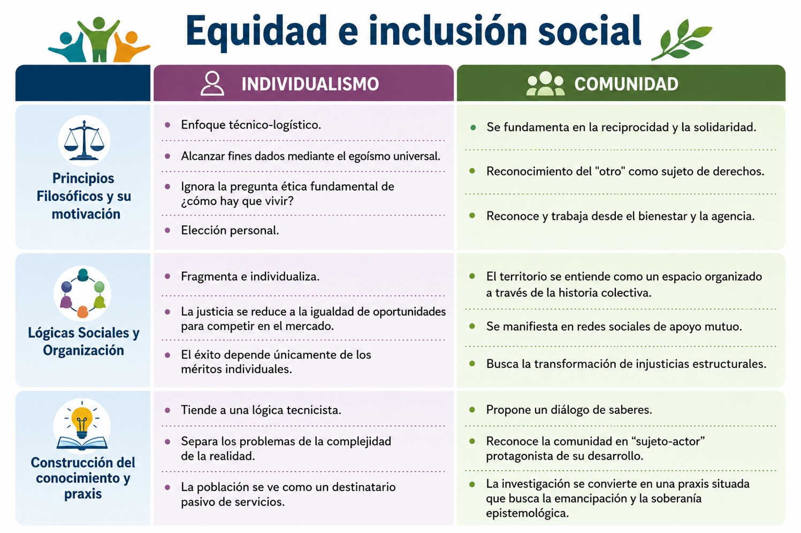
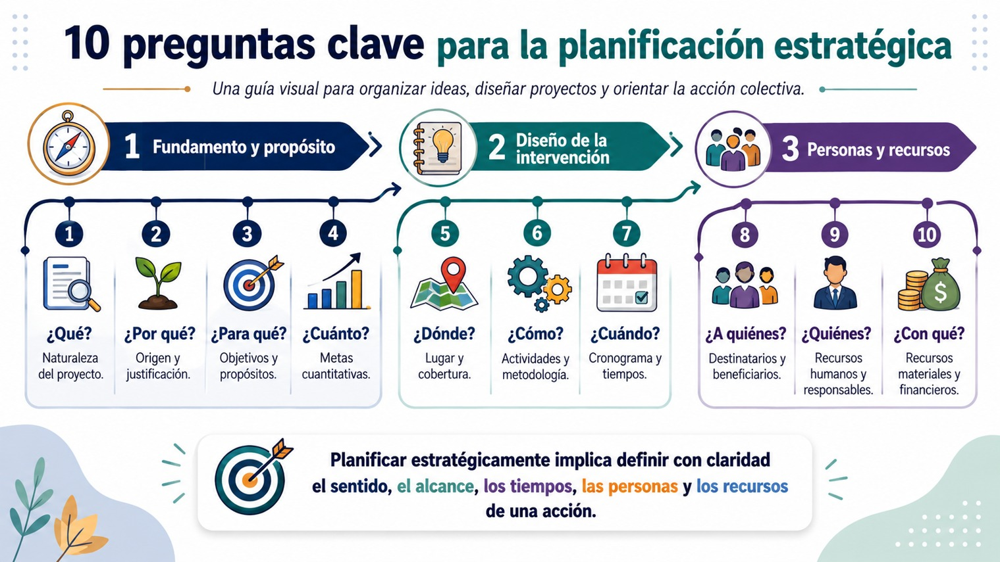

Hablar de desarrollo sostenible implica preguntarnos no solo qué se desarrolla, sino también para quién, con quién y bajo qué condiciones se distribuyen las oportunidades, los recursos y los beneficios del desarrollo. Una sociedad puede aumentar su infraestructura, su producción económica o su capacidad tecnológica y, al mismo tiempo, mantener profundas desigualdades en el acceso a la educación, la salud, la vivienda, la participación política, el conocimiento o un ambiente sano.
Por ello, el desarrollo sostenible necesita incorporar necesariamente las dimensiones de equidad, inclusión y justicia social. La equidad no significa que todas las personas reciban exactamente lo mismo. Significa reconocer que las personas y los grupos sociales parten de condiciones distintas y que algunas desigualdades acumuladas históricamente pueden impedirles ejercer efectivamente sus derechos y desarrollar sus capacidades.
Sara Gordon (1995), muestra que el debate sobre la justicia social ha transitado por diferentes criterios de distribución. En una primera aproximación, la justicia puede plantearse como garantía universal de derechos sociales y como responsabilidad pública frente a las desigualdades. En otras perspectivas, como la de Rawls revisada por la autora, las desigualdades sólo pueden justificarse cuando benefician a quienes se encuentran en una situación menos aventajada y cuando existe una auténtica igualdad de oportunidades.
Esta discusión es importante porque permite distinguir entre igualdad formal y equidad real. Podemos decirlo de otra manera: dos personas pueden poseer formalmente el mismo derecho a ingresar a la universidad y, sin embargo, encontrarse en condiciones muy diferentes para ejercerlo. Una puede contar con recursos económicos, conectividad, tiempo disponible, transporte y apoyo familiar; otra puede realizar trabajo remunerado, desempeñar tareas de cuidado, recorrer grandes distancias, carecer de conectividad estable o enfrentar barreras de accesibilidad.
Formalmente, ambas poseen el mismo derecho pero materialmente no disponen de las mismas posibilidades para ejercerlo. Por ello, la equidad implica preguntarnos sobre cuáles son las condiciones que necesitan las personas para ejercer realmente sus derechos. Gordon (1995), recupera también la perspectiva de Amartya Sen para mostrar el desplazamiento desde una concepción centrada exclusivamente en la distribución de bienes hacia otra preocupada por el desarrollo de capacidades básicas. Desde esta perspectiva, no basta con entregar recursos; es necesario que las personas dispongan de condiciones que les permitan desarrollar funciones fundamentales, participar en distintas esferas de la sociedad y ampliar sus posibilidades reales de elección.
Y podemos expresarlo así la igualdad formal significa que todos poseen el mismo derecho, mientras que la equidad nos permite reconocer cuáles son las condiciones con las que se cuenta para ejercer ese derecho. De este modo, la inclusión, es lo que nos permite eliminar las barreras para que las personas puedan participar efectivamente. Eso es lo que significa justicia social, una justicia que permite que se transforman las estructuras que producen sistemáticamente esas desigualdades.
Si seguimos con el mismo ejemplo, de la universidad podemos decir que de hecho la inclusión tampoco debería reducirse a permitir que personas históricamente excluidas entren a una institución de educación superior pues entrar no significa necesariamente participar. Por ejemplo, una universidad puede ampliar su matrícula y, sin embargo, mantener barreras culturales, económicas, tecnológicas, lingüísticas, territoriales o pedagógicas que dificulten la permanencia y participación de ciertos grupos. Por ello, una concepción amplia de inclusión debería considerar al menos tres momentos: acceso, participación y capacidad de incidir. Así, la inclusión adquiere su sentido más profundo cuando las personas no sólo están presentes, sino que son reconocidas como sujetos de derechos, sujetos de conocimiento y sujetos capaces de participar en las decisiones que afectan su vida.
Mira la siguiente tabla, en ella se contrapone una perspectiva individualista que tiende a fragmentar los problemas y atribuir los resultados exclusivamente a los méritos personales a una perspectiva comunitaria enfatiza la reciprocidad, la solidaridad, el reconocimiento del otro como sujeto de derechos, las redes de apoyo y la transformación de las injusticias estructurales. En el plano del conocimiento, esta segunda perspectiva sustituye la idea de población destinataria por la de comunidad como sujeto-actor.

Comprender la equidad y la inclusión social desde esta perspectiva resulta central para la RSU. En ese sentido, una política universitaria de inclusión no debería limitarse a preguntarse a cuántas personas logramos incorporar, sino:
- • ¿Quiénes continúan quedando fuera?
- • ¿Qué barreras encuentran quienes ingresan?
- • ¿Quiénes participan en las decisiones?
- • ¿Qué conocimientos son reconocidos?
- • ¿Qué grupos aparecen representados?
- • ¿Quiénes se benefician del conocimiento producido por la universidad?
Las diferencias sociales en términos de equidad y territorio
Las desigualdades tampoco se distribuyen aleatoriamente, poseen una dimensión territorial. El lugar donde una persona vive puede afectar sus posibilidades de acceso a transporte, educación, salud, conectividad, empleo, espacios públicos, recursos naturales y seguridad. Por eso la equidad adquiere también una dimensión territorial.
No es lo mismo estudiar las oportunidades educativas exclusivamente desde una estadística general que preguntarnos cómo se distribuyen esas oportunidades entre diferentes comunidades y territorios. Lo mismo ocurre cuando hablamos de agua, vivienda, movilidad, espacios verdes, empleo, seguridad, infraestructura digital, acceso a servicios públicos y exposición a riesgos ambientales.
La justicia social exige entonces reconocer que los territorios distribuyen de manera desigual oportunidades y vulnerabilidades. Gordon (1995), advierte además sobre un problema particularmente relevante: las reglas formalmente iguales pueden producir resultados profundamente desiguales cuando se aplican en sociedades marcadas por fuertes diferencias económicas, sociales y culturales. Señala, por ejemplo, las consecuencias de prácticas discriminatorias y de mecanismos particulares de acceso a bienes y servicios en contextos de desigualdad. Por ello, tratar igual a quienes se encuentran en condiciones profundamente desiguales puede reproducir la desigualdad.
Otro aporte importante recuperado por Gordon proviene de Michael Walzer. Desde esta perspectiva no todos los bienes sociales deberían distribuirse bajo una misma lógica. Educación, salud, seguridad, ciudadanía, participación política o reconocimiento cultural no deberían depender exclusivamente de la capacidad económica de las personas. De este modo, la justicia requiere reconocer que los diferentes bienes sociales poseen significados distintos y, por tanto, necesitan criterios de distribución diferentes. Gordon (1995), advierte que extender indiscriminadamente la lógica del mercado a todas las dimensiones de la vida social no garantiza el bienestar colectivo.
Esta idea es particularmente importante cuando hablamos de universidad pública pues el acceso al conocimiento no puede comprenderse únicamente como una mercancía. Como hemos visto anteriormente, el conocimiento universitario posee también una dimensión de bien público, porque puede contribuir a ampliar capacidades, comprender problemas sociales, democratizar oportunidades y fortalecer a las comunidades. De esta manera, la equidad puede convertirse en una pregunta permanente para la RSU: ¿De qué manera las decisiones universitarias contribuyen a reducir, reproducir o incluso incrementar las desigualdades existentes en su territorio?
Identificar procesos de desarrollo sostenible para la inclusión social y la equidad.
La pregunta que surge cuando pensamos en los procesos de desarrollo sostenible para la inclusión social y la equidad es: ¿cómo construimos en colectivo? Identificar procesos de desarrollo sostenible significa aprender a distinguir aquellas transformaciones que no sólo producen crecimiento o infraestructura, sino que amplían capacidades, reducen desigualdades, fortalecen la participación y mejoran de manera sostenible las condiciones de vida de las personas y comunidades.
Demos empezar afirmando que no todo cambio constituye desarrollo y no todo desarrollo produce equidad. Por ejemplo, un proyecto puede mejorar una parte de un territorio y desplazar a quienes lo habitaban; puede generar empleo, pero deteriorar los recursos naturales de los que depende la comunidad; puede modernizar servicios, pero hacerlos inaccesibles para determinados grupos; puede incorporar nuevas tecnologías, pero ampliar la brecha digital. Por ello, es importante decir que identificar procesos de desarrollo sostenible requiere analizar simultáneamente sus dimensiones sociales, económicas, culturales, políticas y ambientales.
Ander-Egg (2003), plantea que una metodología de intervención debe concebir a la comunidad como sujeto y no como objeto. Esto significa que estudiar, programar, ejecutar y evaluar no son actividades que una institución realiza unilateralmente sobre una población, sino procesos en los que la comunidad participa en la identificación del problema y en la construcción de las acciones.
Propone una guía sobre “cómo hacer” intervención social para alcanzar la transformación de una realidad determinada.
- Estrategia de acción:
- 1. Estructura básica de procedimiento.
- 2. La comunidad como sujeto, no objeto.
- 3. Investigación Acción Participativa.
- 4. Técnicas de intervención.
- 5. Programación y Realismo.
- 6. Comunicación y Socialización.
1. La estructura básica del procedimiento se compone por:
- • Estudio/Investigación: diagnóstico de la problemática.
- • Programación: elaboración de actividades y proyectos.
- • Ejecución: momento de la acción para transformar la situación-problema.
- • Evaluación: control de lo realizado y lo que se está realizando.
2. La comunidad como sujeto y no objeto significa que la investigación debe realizarse con el pueblo y para el pueblo, superando la dicotomía tradicional entre trabajador social y comunidad.
3. Investigación Acción Participativa supone que la investigación debe producir un conocimiento crítico de la realidad, supone la inserción-inmersión, inserción crítica y la acción mientras se investiga.
4. Técnicas de intervención suponen contacto global como la observación etnográfica inicial para captar la cultura, valores y modos de ser de la gente, la realización de entrevistas, reuniones de grupo y triangulación.
5. La programación y el realismo enfatizan el sentido práctico y la flexibilidad, esto quiere decir que los objetivos deben ser realistas y basarse en lo que es “existencialmente significativo” para la gente, ello propone un decálogo de preguntas relevantes, observa las preguntas en el siguiente diagrama:

6. Comunicación y socialización, este último punto paso de la estrategia de acción es muy importante pues supone que la información recolectada debe ser devuelta a la comunidad para su discusión y retroalimentación. De esta manera se transforma el “sentido común” en un “conocimiento crítico”.
La metodología del desarrollo comunitario de Ander-Egg subraya que el desarrollo debe construirse con participación activa, organización y capacidad colectiva para mejorar las condiciones económicas, sociales y culturales de la comunidad. Observa el siguiente diagrama:

Finalmente, desde la perspectiva universitaria, esto significa que identificar un proceso de desarrollo sostenible exige hacer visible una pregunta fundamental:
¿Esta intervención aumenta la capacidad de las personas y comunidades para decidir sobre su propia vida y su territorio, o incrementa su dependencia de decisiones tomadas por otros?
- Ander-Egg, Ezequiel (2003). Métodología y práctica del desarrollo de la comunidad. ¿Qué es el desarrollo de la comunidad?, Grupo Editorial Lumen, Buenos Aires: México.
- Gordon, Sara (1995). Equidad y justicia social. Revista Mexicana de Sociología, (57) N.2, abril-junio, 175-184.
- Kliksberg, Bernardo (2005). Más ética, más desarrollo. Buenos Aires: Grupo Editorial SRL.
- Garaño, Ignacio y Harguinteguy, Facundo (2021). Universidad en movimiento: territorio, territorialización y praxis, en Ivanna Petz (Comp.), Universidad en Movimiento, Curricularizar la extensión. Argentina: Undav Ediciones.
- Sen, Amartya (2020), Sobre ética y economía. Madrid: Alianza editorial.
- Úbeda, María Elena e Isasi, Mariana. [en línea] “Juventudes en acción: su participación y sus voces, tenidas en cuenta” El Clarín. URL: Juventudes en acción: su participación y sus voces, tenidas en cuenta [consulta 14 de julio de 2026]
Para profundizar sobre este tema puedes ver los siguientes videos: